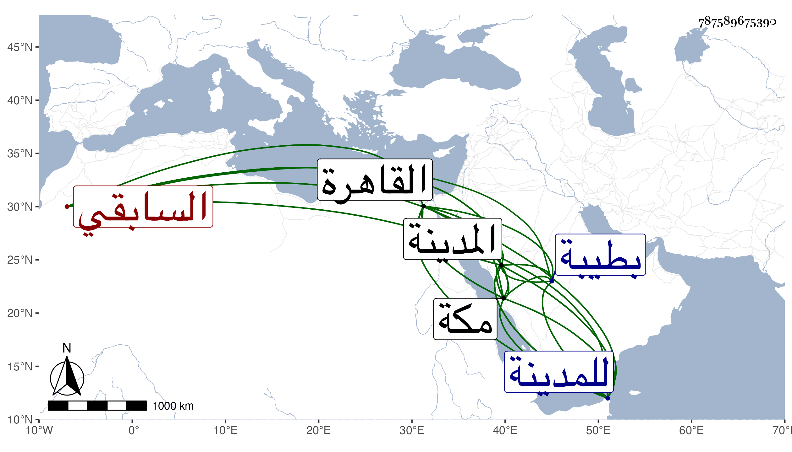

0902Sakhawi.DawLamic.ITO20230111-ara1.EIS1600.787589675390
Biography ID: 787589675390
304
عمر بن عبد العزيز بن بدر سراج الدين السابقي نسبة لسابق الدين أحد خدام المدينة فكان مولى لجده المدني والد محمد الآتي وأحد خدام الحرم كأبيه ويعرف بابن بدر . نشأ بطيبة فقرأ القرآن واشتغل في حفظ المنهاج وغيره ، وسمع على أبي الفرج المراغي وحضر دروس الشهاب الأبشيطي والسيد الطباطبي وكان يقرأ في سبعه وتدرب بالقاضي عبد القادر بن محمد بن يعقوب واختص بمشايخ الحرم ونسبت إليه أشياء فسجنه الأشرف قايتباي مرة بعد أخرى إحداهما بالمقشرة بعد ضربه بالمقارع وذلك في سنة ست وثمانين ثم خلص بعد وشرط عليه أن لا يسافر إلا بإذن ولكن تكرر سفره للمدينة وغيرها ، وقصدني وهو بالقاهرة مرارا حين كان ابنه يقرأ علي وهو زائد الإقدام ثم شفع فيه وعاد إلى المدينة ولم يتحول عن طباعه وفيه محاسن معدودة ، ورأيته في موسم سنة أربع تسعين بمكة ثم بالمدينة وجاء بأثر ذلك مرسوم بالقبض عليه فاختفى ثم توجه سرا ليصل القاهرة ترجيا لمساعدة الأمير شاهين له فبلغه الطاعون فرجع لمكة ودام بها من رمضان حتى حج وكان يجتمع علي ويبالغ في إظهار التودد هذا مع أني أغلظت عليه قبل ذلك بالمدينة بسبب الشهاب بن العليف ثم عاد مع الركب للمدينة وكأنه للوثوق بأميره فدخلها وقد استطلق بطنه فمات وذلك في أواخر ذي الحجة سنة سبع وتسعين عن بضع وخمسين عفا الله عنه وإيانا .
